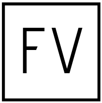

<mat-toolbar role="heading" class="header" (window:resize)="onResize($event)">
  <a routerLink="/"></a>
  <ng-container *ngIf="!displayMenu; else menu">
    <div>
      <button mat-button routerLink="/home">Home</button>
      <!--<button mat-button routerLink="/blog">Blog</button>-->
      <button mat-button routerLink="/learning">Learning</button>
    </div>
  </ng-container>
  <ng-template #menu>
    <div class="menu">
      <button mat-icon-button [matMenuTriggerFor]="menu">
        <mat-icon class="material-icons">menu</mat-icon>
      </button>
      <mat-menu #menu="matMenu" [overlapTrigger]="false">
        <button mat-menu-item routerLink="/home">
          <span>Home</span>
        </button>
        <!--<button mat-menu-item routerLink="/blog">-->
          <!--<span>Blog</span>-->
        <!--</button>-->
        <button mat-menu-item routerLink="/learning">
          <span>Learning</span>
        </button>
      </mat-menu>
    </div>
  </ng-template>
</mat-toolbar>
